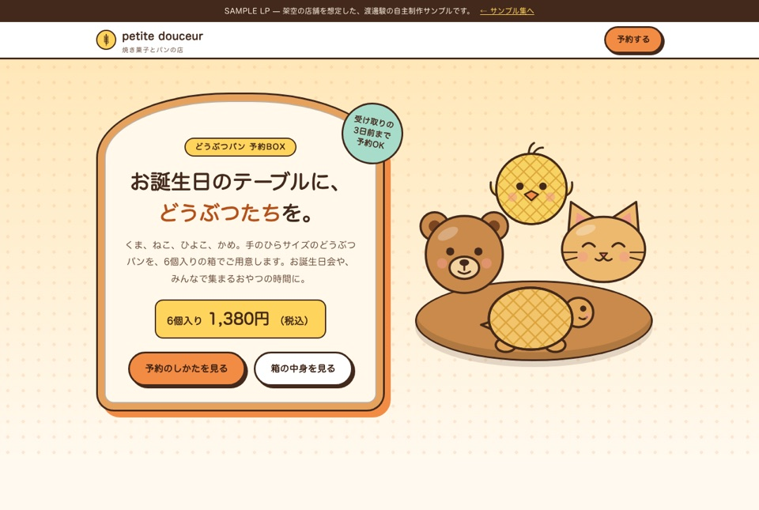
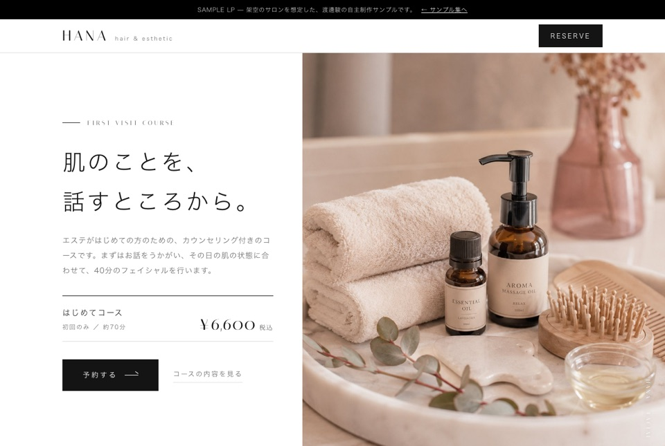
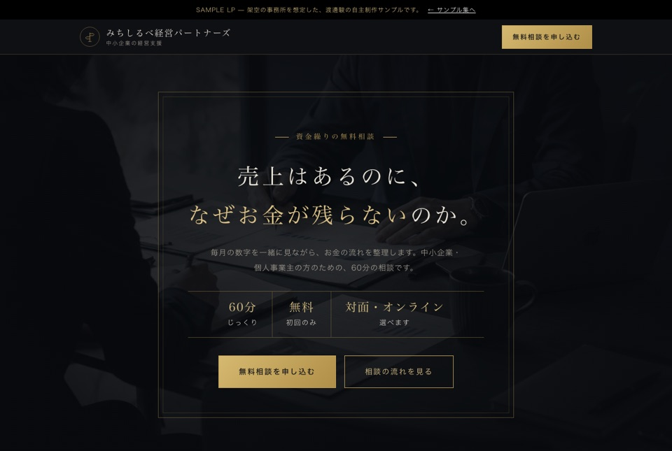
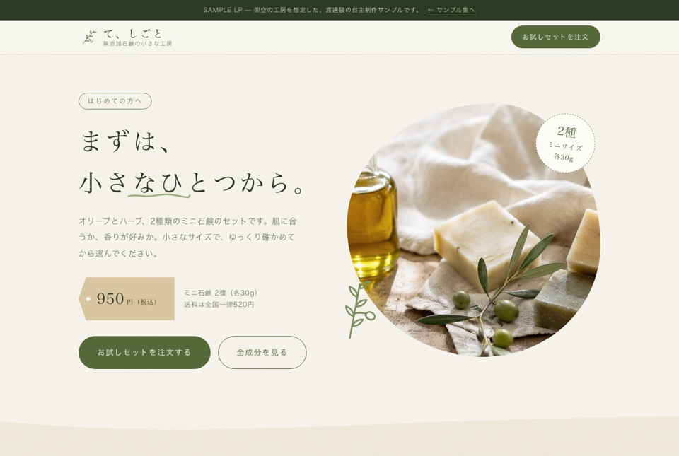
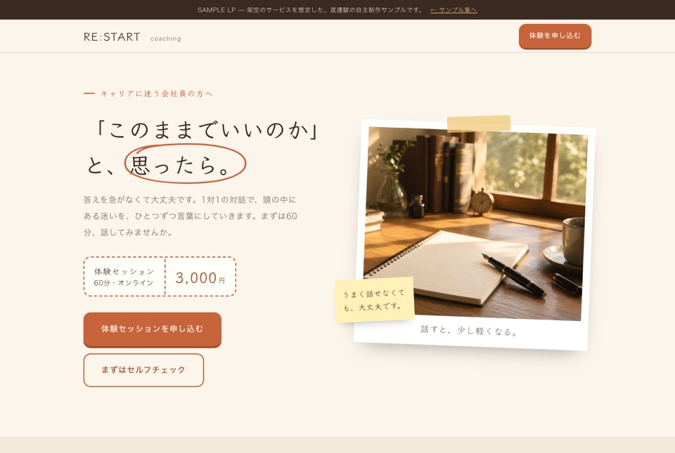
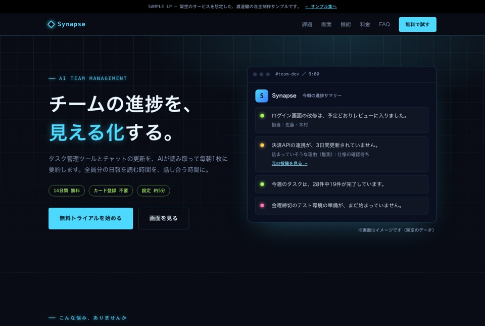

商品やサービスの魅力が届く順番で、LPの構成と原稿を組み立てます。ページとしての制作サンプルも公開しています。
誰に何をどの順番で伝えるかを整理し、LP全体の流れを設計します。
キャッチコピーから本文、行動を促す一文まで、読み手の目線で書きます。
原稿をもとに、ページとして形にします。下のサンプルでご確認ください。
架空のお店・サービスを想定して作ったサンプルです。実際のお客様の案件ではありません。
どのLPも、商品やサービスをひとつに絞り、「悩みへの共感 → 中身の説明 → 安心できる材料 → 申し込み」の流れで組み立てています。雰囲気の違う6種類を用意しました。ご依頼の際は、「このLPの雰囲気で」とお伝えください。画像をクリックすると、ページが開きます。






※お客様の声・料金・事例なども含め、すべて架空です。うち4つは、HPのサンプルと同じお店を想定しています。
検索で見つけてもらうための、基本の設定をして納品します。
LPは、検索よりも広告やSNSから来る人が中心になりやすいページです。そのため、検索の設定に加えて、表示の速さと、広告の言葉とページの言葉がそろっていることを大事にしています。
ページごとに、タイトルと説明文を書き分けます。検索結果で、中身が伝わる要約にします。
SEO記事を書いている経験から、「どんな言葉で探されるか」を調べて、見出しと本文に入れます。
大見出しは1ページに1つ。見出しの順番を整え、写真には内容が分かる説明（代替テキスト）を付けます。
スマホで読みやすい作りにし、写真は軽くして、表示を速くします。
シェアされたときに出る見出し・説明・画像を設定します。
広告やSNSで見た言葉が、ページを開いてすぐに目に入るように作ります。来た人が「思っていたページと違う」と感じないためです。
| 表示の速さ | 99〜100点 |
| 見やすさ・使いやすさ（アクセシビリティ） | すべて100点 |
| 安全で正しい作り（ベストプラクティス） | すべて100点 |
※サンプルは架空のお店なので、検索結果には出さない設定（noindex）にしています。それ以外の設定は、各ページのソースで確かめられます。
ご相談は、こちらからどうぞ。「こんなこと頼めるかな」という段階でも大丈夫です。
> CONTACT